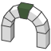
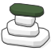

keystone mark: arch
A flat-faced isometric arch, two piers and five stones; only the keystone, standing proud of the ring, wears moss. Every image is an SVG at its own size except the favicon PNGs, which are 1:1.
hero: the keystone drops into the crown
mark

favicon

cairn


Generated by arch/mark.mjs; the voussoir and keyed directions stay in their directories, off this page.